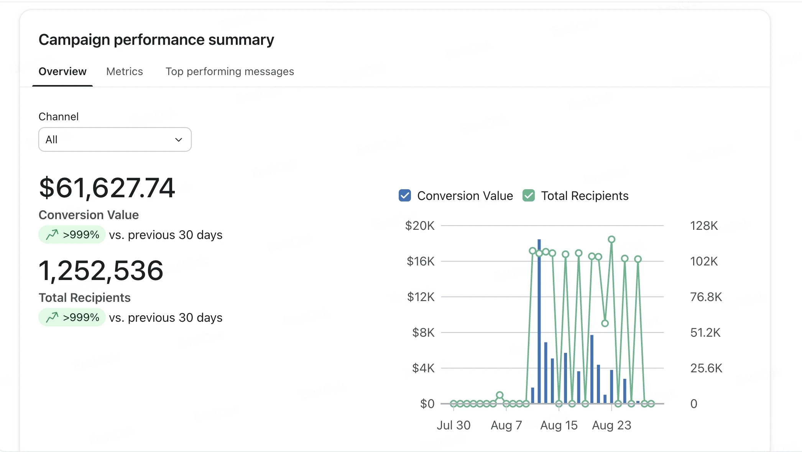
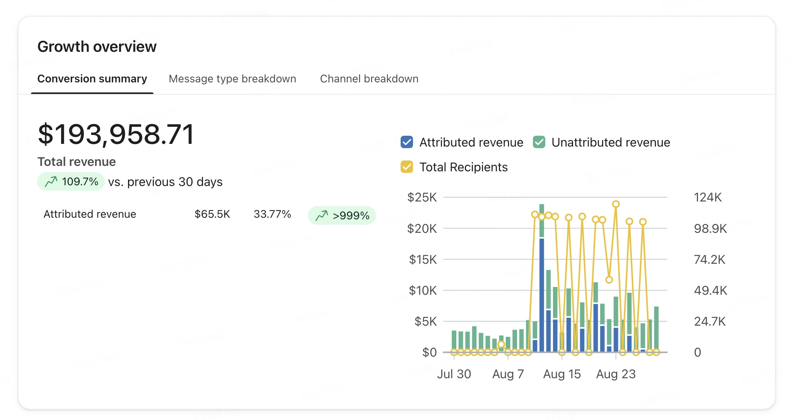

返回全部作品
PRODUCT LAUNCH · LANDING PAGE · EDM
DH20 新品发布
两周完成预售页面与邮件内容
DH20 Early Bird 的准备时间只有两周。我负责将梳理好的产品卖点和早鸟权益进行结构化，设计预售页面与 EDM，并跟进视觉制作和上线检查。AI 用于尝试 UI 方向和制作内容初稿，最终页面与开发团队共同完成。
我的职责预售页面设计 · EDM 框架 · 协同开发上线

PROJECT OVERVIEW
[2 WEEKS]
AI-ASSISTED COMMERCE
我的工作
- MY ROLE
- UX/UI、视觉与内容设计、项目推进和上线检查。
- TEAM
- 产品、市场、开发与内容团队。
- SCOPE
- Launch Page · EDM
AI Visuals · QA
- TOOLS USED
- FigmaShopifyCodexAdobeKlaviyo
01 · PAGE STRUCTURE
先讲清产品和权益，再进入购买。
基于已梳理好的产品卖点和早鸟权益，我按浏览顺序安排页面内容：了解产品、确认早鸟权益、加入购物车、核对订单、结账。
首屏保留产品媒体、价格、权益和购买按钮；功能对比与常见问题放在后续内容中，供需要更多信息的用户继续查看。
02 · UI EXPLORATION
用同一份线框稿比较三个方向。
我将线框稿输入 Figma Make，得到三个可浏览方案，再检查首屏信息是否完整、文字是否清楚，以及购买按钮是否容易找到。
01
3 AI DIRECTIONS
DIVERGE · 左侧发散
先看不同方向，再决定保留什么。
CLICK TO SWITCH · 点击切换方向


点击上方 Tab 对比方向 · 图片区域可滚动查看完整页面
03
HTML · SHOPIFY
IMPLEMENT · 右侧落地
最终手机页面。


FINAL PAGE · PURCHASE FLOW
商品页、购物车与结账流程。
03 · AI VISUAL EXPLORATION
从 100 多张探索图中筛出 12 张，确定三个视觉方向。
人物与食物场景用于展示日常使用；产品氛围图突出烟雾和外观；阳台、露台场景展示桌面产品的使用空间。
我比较光线、构图和产品表现，排除不符合品牌或产品的画面，再将选定方向用于页面与邮件。


03 · APPLY TO PAGE
商品页面展示。
图内可滚动查看。
打开完整页面 ↗04 · EDM CAMPAIGN
先定品牌规范，再用 Codex / AI 生成统一调性的 EDM。
我把品牌设计规范和每封邮件的内容要求交给 Codex / AI，让它按同一套规则生成不同主题的 EDM，再逐封检查产品信息、版式与行动按钮。
下面精选 8 封，展示同一套品牌规范如何用于新品预告、使用场景、产品介绍和截止提醒，并非本次制作的全部邮件。


横向滑动查看精选样例 · 点击可查看高清长图
CAMPAIGN RESULT
不靠付费投放，用 EDM 带动早鸟购买。
面向已有顾客和邮箱订阅用户发送 EDM，将新品与早鸟权益直接传达给他们，引导进入产品页面购买。
以下为 Klaviyo 看板记录，按各自指标口径展示，不相加，也不与下方全周期净收入合并。数据不单独归属于上方 8 封精选样例。


团队预售全周期结果
从早鸟验证到预售放量，两个阶段均超额完成目标。
2026 年 8 月 12 日至 9 月 19 日 · DH20 预售全周期
我的贡献将已梳理的卖点与权益落实到预售页面，并基于品牌规范用 Codex / AI 制作系列 EDM，跟进内容检查与上线。
团队成绩全周期销量与净收入为产品、市场、开发和内容团队共同推进的结果，按最终战报口径展示。
两个阶段，分别超额完成目标。
早鸟阶段：8 月 12 日—8 月 23 日；预售阶段：8 月 24 日—9 月 19 日。
预售阶段 ROI：4.69。阶段完成率按最终战报取整展示；ROI 仅对应 8 月 24 日—9 月 19 日预售阶段。